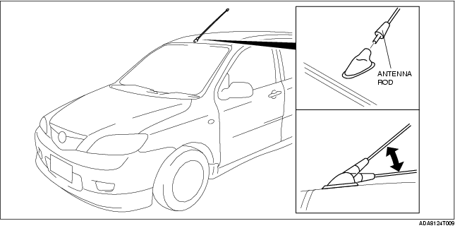

CENTER ROOF ANTENNAE CONSTRUCTION
id092000108600
• A center roof antenna has been installed on the front, center area of the vehicle.
• The antenna rod can be removed to prevent damage to the antenna when parking the vehicle in tower garages or when using an automatic car washer.
• The antenna rod is retractable to prevent antenna deformation from contact with roof cargo.
